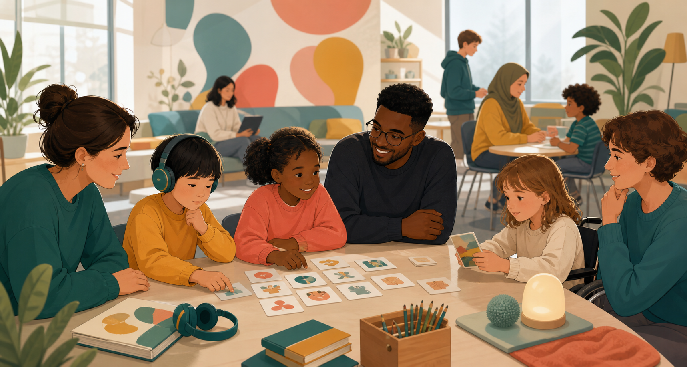

Шкільний проєкт про нейрорізноманіття
Аутизм: зрозуміти, прийняти, підтримати
Цей сайт пояснює простими словами, що таке аутизм, чому люди можуть сприймати світ по-різному і як зробити школу, дім та спілкування спокійнішими для всіх.
Головна думка
Аутизм не робить людину “гіршою” або “кращою”. Він робить досвід людини іншим.
Аутичні люди можуть інакше спілкуватися, навчатися, реагувати на звуки, світло, дотики або зміни планів. Комусь потрібна невелика адаптація, а комусь постійна допомога. У будь-якому разі людині важливо бути почутою.
Що є на сайті
Розділи проєкту
01
Про проєкт
Коротко про те, що таке аутизм, чому це спектр і як говорити про нього бережно.
02Підтримка
Ідеї для дому, школи та спілкування: візуальні підказки, паузи, чіткі правила і спокійне середовище.
03Міфи
Розбираємо часті стереотипи: про вакцини, однаковість, “невихованість” і допомогу дорослим.
04Зворотний зв’язок
Форма для запитань, пропозицій та ідей, як покращити шкільний проєкт.
Для захисту проєкту
Міні-план виступу
- Пояснити, що аутизм пов’язаний з особливостями розвитку мозку.
- Показати, що спектр не є простою шкалою “легкий — важкий”.
- Навести приклади підтримки у школі та спілкуванні.
- Розібрати 2-3 міфи й послатися на ВООЗ або CDC.